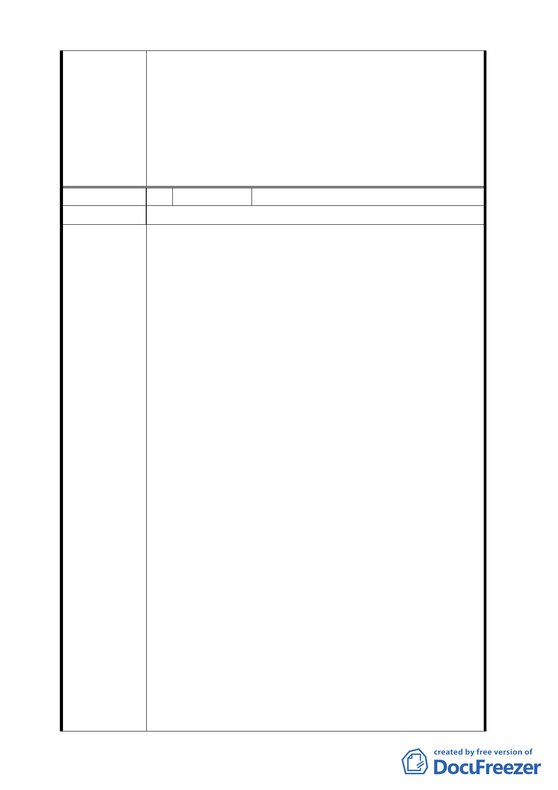

程「2.於金融服務專用區（一）、（二）使用執照核
發前…，最遲應於民國98年底以前施工完成」，因
應本案回饋設施尚涉社區協商，增訂「但非可歸責
於開發單位之延遲期間，其期限得以展延。」
（三）原計畫 肆、計畫內容 三、特別規定（四）回饋時
程「3.容積率25％容積獎勵項目，申請人應於金融
服務專用區（一）、（二）使用執照核發前與市府訂
定使用契約」部分，維持原計畫內容不予變更。
編 號 4. 陳情人 陳議員孋輝
陳 情 理 由 市府都市計畫變更，圖利建商、草賤人民
一、「中泰敦北金融服務專用區開發案」84 年開始召開了
八次專案審查會議，在 89 年 8 月 9 日確認申請人所提
供的回饋項目。92 年 5 月 6 日由臺北市政府公告實施。
7 年過去了，開發商當初承諾的回饋項目進度不僅嚴重
落後，社區居民活動中心迄今仍在紙上作業，更離譜
的是市政府竟然利用都市計畫細部計畫變更之便，包
庇建商！
二、有關 92 年 5 月 6 日所公告的「『長春路北側、慶成街
兩側土地』金融服務專用區細部計畫案」，市府與申請
人中泰賓館股份有限公司（以下簡稱中泰）雙方約定，
市府同意給中泰容積獎勵，分別在金一區與金二區蓋
國際觀光旅館與豪宅，可是中泰必須在旅館與豪宅取
得使用執照前，完成公園、道路、廣場設施及社區區
建議辦法
民活動中心之回饋，即便 98 年以前旅館與豪宅未完成
取得使用執照，上述回饋設施也應在 98 年施工完成﹗
但 7 年過去了，檢查所有回饋項目，目前只完成興安
街 174 巷道路鋪設，其餘公園、慶城街 46 巷街道造景、
公園北側道路與社區區民活動中心興建相關進度嚴重
延宕，迄今不見蹤影！
三、眼看中泰無法在 98 年底前完成上述所有回饋設施，所
申請的建築執照即將被廢止之際，市府竟幫中泰解
套，把財團利益擺中間，市民利益放兩邊！原本計畫
是要在金一區旅館與金二區豪宅取得使用執照前，就
要完成相關回饋設施。現在卻修訂成中泰可以提前取
得金一區觀光旅館使用執照！卻把松基里民日常需要
的公園、里辦公處與區民活動中心的完工延到金二區
豪宅取得使用執照前就可以了！甚至拖到明年 9 月！
是甚麼道理？且更過分的是市府還想隻手遮天，不讓
當地里民表達本次都市計畫修訂的看法，蓄意將說明
會時間選在 5 月 21 日下午 2 時 30 分的非假日時段，
-5-